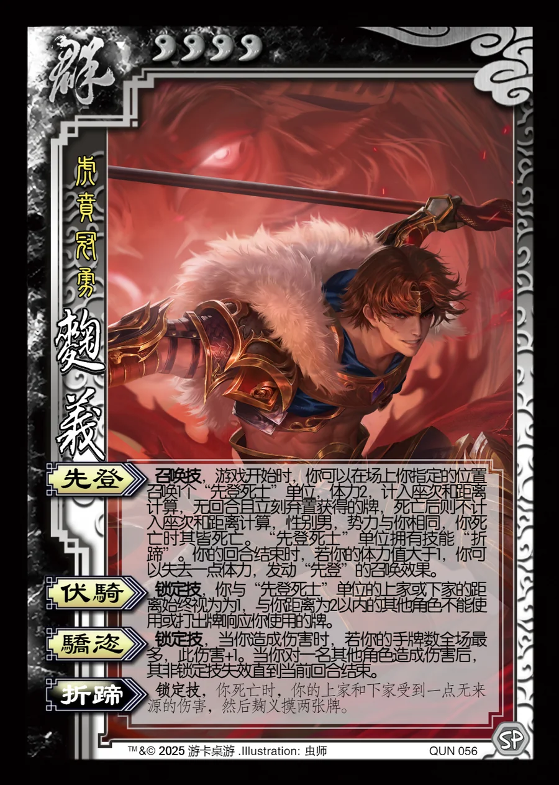

点击卡面查看大图
群
军麹义
♥4虎贲冠勇
先登召唤技
召唤技，游戏开始时，你可以在场上你指定的位置召唤1个“先登死士”单位，体力2，计入座次和距离计算，无回合且立刻弃置获得的牌，死亡后则不计入座次和距离计算，性别男，势力与你相同，你死亡时其皆死亡。“先登死士”单位拥有技能“折蹄”。你的回合结束时，若你的体力值大于1，你可以失去一点体力，发动“先登”的召唤效果。
伏骑锁定技
锁定技，你与“先登死士”单位的上家或下家的距离始终视为为1，与你距离为2以内的其他角色不能使用或打出牌响应你使用的牌。
骄恣锁定技
锁定技，当你造成伤害时，若你的手牌数全场最多，此伤害+1。当你对一名其他角色造成伤害后，其非锁定技失效直到当前回合结束。
折蹄锁定技衍生
锁定技，你死亡时，你的上家和下家受到一点无来源的伤害，然后麹义摸两张牌。